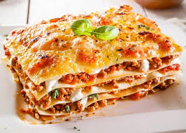

Italian lasagna

Description
Lasagna is a traditional and iconic dish of Italian cuisine, consisting of layers of pasta interspersed with various ingredients that vary depending on the region and recipe. The classic version, originating from Emilia-Romagna, is made up of layers of fresh pasta, ragù sauce (a mix of ground beef and pork slow-cooked with tomato, onion, carrot, and celery), and a creamy béchamel sauce. These layers are repeated several times and topped with a generous layer of grated Parmesan cheese before being baked until the top is golden and bubbling.
This dish is not only notable for its delicious taste and texture but also for its versatility. There are variations that include spinach and ricotta, mushrooms, or even vegetarian versions with an abundance of vegetables. Lasagna is not only a feast for the palate but also a reflection of the cultural richness and diversity of Italian cuisine, capable of adapting to different tastes and occasions. Served hot, each portion of lasagna reveals a complex and delightful symphony of flavors that transport diners to traditional Italian tables.
Ingredients
- Fresh pasta sheets
- Ground beef
- Ground pork
- Tomatoes (or tomato sauce)
- onion
- Carrot
- Celery
- Garlic
- Olive oil
- Red wine
- Milk
- Butter
- flour
- Nutmeg
- Parmesan cheese
- Salt
- Pepper
- Fresh basil (optional)
- Ricotta cheese
- Spinach (optional for variations)
- Mushrooms (optional for variations)
Steps
- Prepare the Ragu Sauce
Heat olive oil in a large pot over medium heat
Add chopped onion, carrot, celery, and garlic. Sauté until softened.
Add ground beef and ground pork. Cook until browned.
Pour in red wine and let it simmer until reduced by half.
Add tomatoes (or tomato sauce), salt, and pepper. Let the sauce simmer on low heat for at least 1-2 hours, stirring occasionally.
- Prepare the Bechamel Sauce
In a separate saucepan, melt butter over medium heat.
Add flour and whisk continuously to form a roux.
Gradually add milk while whisking to prevent lumps.
Continue to cook and whisk until the sauce thickens.
Season with salt, pepper, and a pinch of nutmeg.
- Cook the pasta sheets
Bring a large pot of salted wAter to a boil
Cook the fresh pasta sheets for a few minutes until al dente
Drain and lay them flat on a clean kitchen towel to prevent sticking.
- Assemble the lasagna
Preheat the oven to 375°F (190°C).
Spread a thin layer of ragù sauce on the bottom of a baking dish.
Place a layer of pasta sheets over the sauce.
Spread a layer of béchamel sauce over the pasta.
Add another layer of ragù sauce and sprinkle with grated Parmesan cheese.
Repeat the layers (pasta, béchamel, ragù, Parmesan) until all ingredients are used, ending with a layer of béchamel and a generous sprinkle of Parmesan on top.
- Bake the lasagna
Cover the baking dish with aluminum foil.
Bake in the preheated oven for about 25-30 minutes.
Remove the foil and bake for an additional 15-20 minutes, or until the top is golden and bubbling.
- Rest and serve
Let the lasagna rest for 10-15 minutes before serving.
Slice into portions and enjoy!